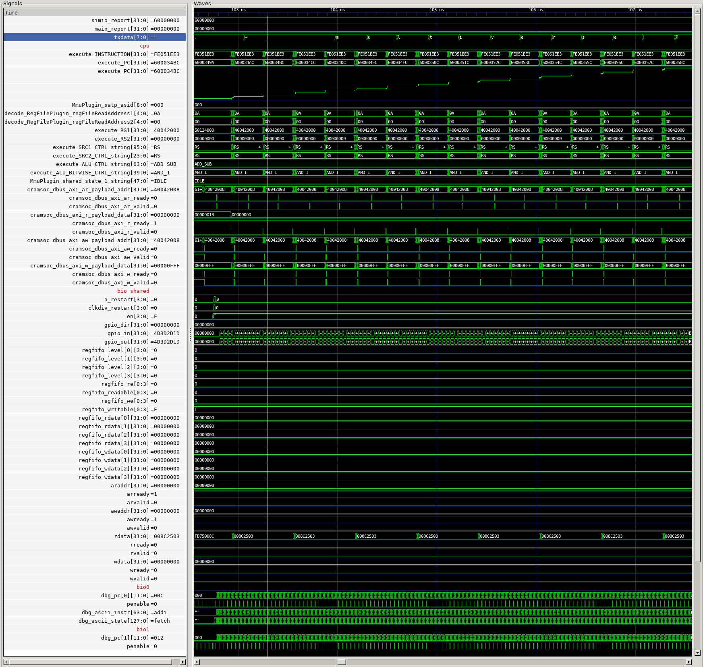
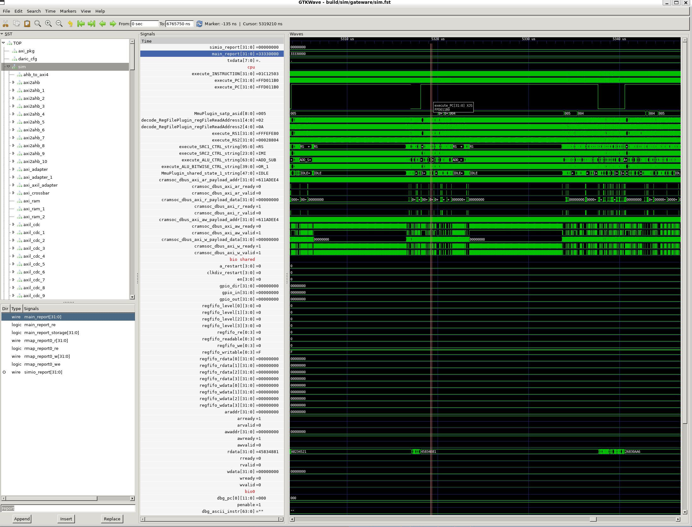

Chip Source Code: RTL
RTL (Register Transfer Logic) refers to the "source code" for the Baochip-1x. It is mostly written in verilog/systemverilog, with parts derived from SpinalHDL (Scala) and Litex (Python).
While the RTL description of the Baochip-1x redacts some closed-source components, it is complete enough to be useful for automatic documentation generation and functional simulation. This chapter describes how to do both.
Automatic Documentation & Header Generation
The following artifacts can be extracted directly from the RTL:
- xous-core header file.
- A set of C header files
- Partial SVD file describing the SoC peripherals. The rest of the SVD file is generated by Litex upon compiling the CPU core complex.
- Human-readable SoC documentation
Header generation is accomplished by running rtl_to_svd.py like this from within the rtl/scripts/headergen directory:
python3 ./rtl_to_svd.py --path ../../
This invocation will automatically generate and place all of the documentation inside the rtl/scripts/headergen/output directory. This directory is what is made available at the baochip on-line register docs. Note: the script has a whole pile of dependencies, which are not well documented. Pull requests to this documentation are welcome to help fix that deficiency.
Furthermore, the SVD file generated by this script is exported to xous-core and then run through svd2utra to generate the UTRA header file abstractions found in Xous.
Simulation with Verilator
Verilator is an open source verilog simulator that's capable of doing a fairly accurate simulation of the Baochip-1x SoC. The simulator favors performance over accuracy; in particular, it is incapable of representing the X (unknown) logic state. This isn't a liability for end users because during tape-out, the SoC was thoroughly vetted for X propagatation issues using a more accurate but slower proprietary simulator (VCS).
The upshot is that verilator is an extremely powerful tool for debugging software on the Baochip-1x. Below is a screenshot of a typical debugging session using verilator. In this example, we're examining some details of the BIO executing code. Note how we can view the debug UART output on the third line (txdata). The stepped, upward-sloping line is the program counter value plotted as an "analog" waveform (the code is just stepping through a the print of the string "multiverse"). You can also see the details of the register file accesses on the CPU, data on the AXI bus, GPIO pin state changes, and also which instruction is running on the BIO core and its respective execution state near the bottom. This is just a tiny portion of the visibility you can have into the machine function - literally thousands of waveforms are accessible in this tool.

Verilator captures the entire state evolution of the Baochip-1x as it runs your code, so you can go forward and backward in execution history, and you can inspect every register, bus, and signal inside the chip.
The waveform viewer shown above is GTKWave, built from a fork that adds the "codezoom" feature. Codezoom allows you to hover over a the program counter trace of a verilator simulation and automatically resolve the assembly code that's running on the CPU. It works by forwarding some hard-coded trace parameters over UDP to the localhost, which can be picked up by a Python script. Clicking on a waveform "show mouseover" turned on looks like this (note the current PC value is displayed in a hover window):

And this results in the codezoom script showing you what instruction is at that program counter value in real time:

Here's a video of it in action (download the video):
This is particularly handy for tracing own hard-to-catch bugs, especially ones that change when instrumentation is applied that may affect timing of execution.
Methodology
Verilator does not literally run the top level RTL file that describes the Baochip-1x, because some portions such as the AXI bus fabric, analog/mixed-signal IP (PLL, USB, regulators, ADC) and details of the built-in self test routines are closed source. Instead, a version of the chip is created in Litex, a Python framework for describing SoCs, which uses the same Vexriscv core complex and general bus architecture as the Baochip-1x. Select peripherals of the SoC are ported into this framework, and simulation stubs are created that target these peripherals. Currently the best-supported and tested stub is for the BIO, but there are also frameworks for debugging UDMA peripherals (although these have almost certainly bit-rotted by now).
Verilator is fast enough to boot the Xous OS in a reasonable amount of time (a couple minutes without waveform tracing; about 15 minutes with). This speed is over 10x faster than simulations run using the "gold standard" VCS tool; what you gain in speed you lose in accuracy (verilator is purely functional and does not consider timing or X-propagation).
Thus in the tape-out flow, verilator flow was to "rough out" IP blocks, assist with code development, and run large, complicated CI tests that would be impractical to run using the VCS tool. A select subset of tests are then run using VCS on the full SoC with all the proprietary blocks and detailed timing models of the chip that consider process, voltage and temperature. The VCS test cases are chosen to exercise correct power-on reset initialization (a significant challenge on real silicon, due to the x state being "real") and maximal coverage for minimum runtime. Once the blocks pass test on VCS, the code meets verilator's assumptions, allowing it to be used as a fast, open-source code simulator.
Thus, while the verilator models presented here are not perfectly cycle-accurate, they were accurate enough for chip development and reflects an important and significant portion of the actual development flow used in building and validating the Baochip-1x.
Setting up Verilator
Verilator 5.007 devel rev v5.006-30-g7f3e178b6 was used for simulation. Newer versions may work just fine, but they have not been tested. If your OS has a verilator package, be sure to run verilator --version and check that it is recent enough. Verilator is open source and you can download & build it from github.
GTKwave was used for waveform viewing. A custom fork (udp-send) of v3.4.0 is required to support the "codezoom" feature documented here.
Once you have built and installed these tools, you should be able to run the script at ./verilate/verilate.sh. This shell script supports the following arguments:
-t [xous, iron]. Defaults toiron.ironruns the code base indeps/nto-tests.xousruns the code base indeps/xous-corebuilt for thebao1x-simtarget.s [normal, fast]. Defaults tonormal.fastruns ~5x faster, but does not save a waveform file. However, it does print debug uart statements to the console. Thusfastis useful as a CI check that previously vetted simulations are still working, assuming you have populated your code with debug statements and checks for this.a [normal, sce]. Defaults tonormal.sceruns a variant of the SoC that has just the SCE (secure crypto engine), but none of the other validation peripherals. Note that different "views" of the SoC are used to speed up simulation and reduce complexity of setting up models. HELP WANTED The current "SCE" view relies on a couple of out-of-tree AMBA IP to do some bus conversion and clock domain crossing. These are fairly generic IP blocks that I'm pretty sure already exist in the OSS world but it was more expedient to rely on the closed-source models to bring up the simulation. If there is a user that actually wants to run the SCE models, contact bunnie and if you have the initiative he'd appreciate any help with creating the missing models. The specific models missing as of the time of writing are: AHB to APB converter (it does exist in the tree already, but the code needs to be converted to refer to it), AHB to AHB sync (I think this is a CDC across AHB domain), and AHB to AHB "sync error canc" - not quite sure what this is but I think it probably is a reverse channel across the CDC for bus errors.
TODO: There is a "udma" model variant but it has bit-rotted and is not integrated into the "user friendly" framework. If someone needs/wants to run UDMA simulations, most of the work has been done but some dangling references need to be cleaned up. Drop bunnie a note if you end up being unable to solve the bit-rot issues in the UDMA model.
nto-tests is the actual test code used to validate the portions of the Baochip-1x that were contributed by bunnie. It runs in a "baremetal" environment and has about a dozen configurable tests.
xous-core is the Xous OS, which can be configured with "shortcuts" (through the hwsim and verilator-only features) that shorten simulation runtime. Most of the "shortcuts" involve skipping zero-initializations because verilator guarantees all memory is 0 by default (unlike real hardware where it could truly be any value).
Under the hood, the verilate.sh script will:
- Build an SVD SoC description from LiteX
- Pass the SoC description to the Rust target (
nto-testsorxous-core) - Build & stage a runnable binary using Rust
- Extract assembly code listings usable with codezoom (placed in the
listingsdirectory) - Invoke the SoC description again with Litex, this time using its built-in Verilator support to invoke the simulation
On nto-tests, the simulation will automatically terminate in many cases due to some specialty tooling added to the SoC model. xous-core requires you to control-C out when you've collected enough data. Note that verilator has a little bit of a buffering delay on writing waveform data, so it's always a good idea to let it run for about 15 seconds longer than you need it to, to ensure that the aspect of interest is actually written to the waveform file.
Once the simulation is done, you can view the results by running gtkw_run.sh. This script will invoke GTKwave with a save file that will pre-populate some useful signals. Keep in mind there are literally tens of thousands of signals inside the chip, so what you see is just a small subset of what you can view. Think of it as a starting point for your debugging experience. It also configures GTKwave to pipe the necessary data to UDP so that you can run with codezoom.
To use the codezoom feature, run python3 ./codezoom.py --file ../listings/<your-crate.lst> in the verilate directory, on the same host that you're running GTKwave on. Then, in GTKWave, select View->Show Mouseover. Once this is enabled, left-clicking on the "analog waveform" in the viewer (which is the Program Counter (PC) value) will cause the PC value to be piped into the codezoom python script. The script will then automatically show you the code at that PC value.
The script is "Xous-aware", which allows you to debug transitions between kernel and userspace for a single process. The process must correspond to the one specified by the --file argument; the kernel file is automatically set up and resolved by the helper scripts in the verilate direcotry. Clicking on the PC in unrelated processes will simply show you that PC offset in the file you specified to codezoom; thus the results for other processes are gibberish.